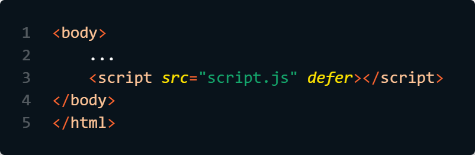

With async the download of the JavaScript file takes place ansynchronously, so that the processing of the HTML code is not paused. This executes the JavaScript code directly once it is downloaded. Suitable only for scripts that work independently of the HTML document.
With defer the JavaScript code is not executed until the HTML code has been completely processed.
If neither async or defer is present: The script is downloaded and executed immediately, blocking parsing until the script is completed.